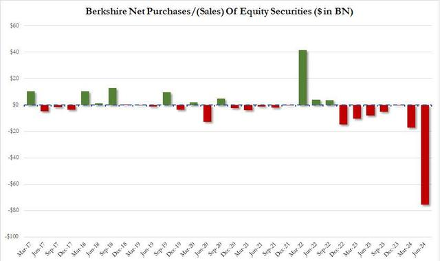
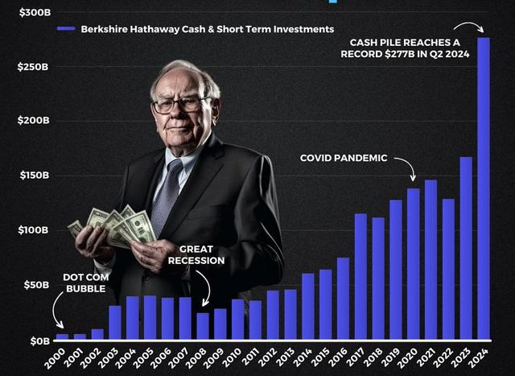
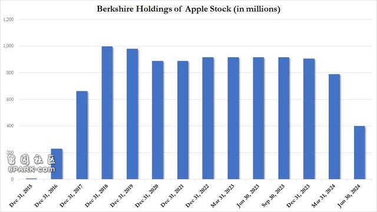
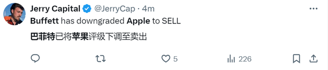

股神巴菲特又让市场意外了！
根据最新公布的季报，截至二季度末，伯克希尔持有的苹果股份价值为 842 亿美元，第二季度苹果持股量从第一季度的 7.89 亿股下降至约 4 亿股，降幅接近 50%。
伯克希尔的现金持股量从一季度的 1890 亿美元增至 2769 亿美元，这主要是因为伯克希尔净卖出755亿美元的股票。这是伯克希尔连续第七个季度卖出的股票多于买入的股票。

伯克希尔旗下数十家企业的第二季度利润从去年同期的 100.4 亿美元增长15%，至116亿美元，约合每股A类股票8,073 美元。其中近一半利润来自伯克希尔保险业务的承保和投资。

此前，伯克希尔在第一季度减持了13%的苹果股份，并在 5 月份的伯克希尔年会上暗示这是出于税收原因。巴菲特指出，如果美国政府希望弥补不断攀升的财政赤字，提高资本利得税，那么今年“少量出售苹果”将使伯克希尔股东长期受益。
苹果股份的减持并不令人意外，但减持规模却出乎意料。一些伯克希尔观察人士已经预料到这一减持，因为巴菲特一旦开始减持，通常会持续减持大量股权，外界预计减持数量将达到 1 亿股左右。

有用户在X上表示，这是巴菲特下调了对苹果的评级。

在巴菲特的投资副手泰德·韦施勒和托德·康布斯的影响下，伯克希尔于 2016 年开始购买苹果股票。多年来，巴菲特对苹果的喜爱与日俱增，他大幅增持苹果股份，使其成为伯克希尔最大的股票，并称这家科技巨头是其保险公司集团之后第二重要的业务。
现在的一个关键问题是伯克希尔是否会在本季度继续减持苹果股份，甚至可能完全清仓。
值得注意的是，除了头号持仓苹果之外，伯克希尔还在连续“清仓式”抛售第二大持仓美银。自7月中旬以来，伯克希尔出售了价值超过38亿美元的美国银行。
巴菲特“套现”：“腰斩”头号持仓苹果、“清仓式抛售”二号持仓美银
除了头号持仓苹果“腰斩”之外，伯克希尔还在连续“清仓式”抛售第二大持仓美银。
据伯克希尔哈撒韦最新向SEC提交的文件显示，7月30日至8月1日期间，伯克希尔再度出售1922万股美国银行股票，套现约7.8亿美元。
自7月中旬以来，这已经是巴菲特第四次抛售美国银行股票，连续12个交易日减持美国银行，此前的三次减持分别是：
在7月25~29日期间，伯克希尔减持了约1841万股美国银行股票；
在7月22~24日期间，伯克希尔减持了近1900万股美银股票；
在7月17~19日期间，伯克希尔减持了3389万股美国银行股票。
经历4轮抛售后，巴菲特累计减持9000万股美国银行股票，套现约38亿美元。目前伯克希尔仍然持有美国银行9.42亿股股票，还是美国银行的最大股东。根据39.5美元的股价计算，持股价值约372亿美元。
巴菲特为什么在持续清仓美国银行？
在伯克希尔发布财报之际，巴菲特就一直在减持银行股，这让一些人认为“奥马哈先知”已经开始担心牛市过热。
Glenview Trust 的首席投资官Bill Stone认为，没有什么比银行对经济更敏感，现在投资者更担心美国经济会放缓甚至衰退，也许巴菲特感到了危险并开始采用逆向投资法了。
毕竟巴菲特每次卖出持仓的理由都十分充分，上次卖掉部分苹果持仓就是为了合理避税。有分析指出，这次出售美国银行股票，巴菲特可能出于以下几个方面的考虑：
第一点就是，巴菲特可能在为其接班人筹集更多现金。
虽然巴菲特在5月的股东大会上表现依然敏锐，但不可回避的是他快要94岁了。在这次股东大会上，巴菲特也提到了继任者的问题，并表示希望在他卸任后能，给接班人更多的灵活性。如果伯克希尔的现金被自己晚年的投资所占用，可能会限制接班人的操作空间。
这也可以解释为什么巴菲特最近一直在筹集大量现金。
伯克希尔在一季度的现金储备就已经达到创纪录的1890亿美元，在经历减持苹果和美国银行等操作后，目前的现金储备可能接近2000亿美元。巴菲特在股东大会曾表示：
我们很想花掉这些钱，但除非我们认为（某个企业）正在做的事情风险很小，而且能为我们赚大钱，否则我们不会花掉这些钱。这并不是说我在抗拒投资，只是很多所谓的投资并不吸引人。
此外，由于过去两年国债收益率飙升，巴菲特手持的巨额现金即便通过投资短期无风险的国债，也能获得很高的回报。例如目前三个月期国债的收益率为5.333%，远高于美国银行目前2.24%的股息率。
如果伯克希尔把手头的2000亿美元的现金都买国债，每年可产生约100亿美元的收益。
第二点就是，美国企业税未来可能会上调，巴菲特减持美国银行可能在为应对潜在的税收变化做准备。
巴菲特在股东大会上提到，美国的企业税率从前几年的35%降至21%，但这些税收减免政策可能在明年到期。
分析人士指出，一旦企业税回升至35%，即便苹果的营收水平不变，苹果的估值也会从目前的35倍PE上升至42.5倍PE。虽然美国银行15倍的PE远低于苹果，但也接近过去七年的最高点，这也可能是巴菲特选择这个时机出售它的原因之一。
第三点，巴菲特可能对美国银行及其巨大的未实现损失感到失望。
尽管美国银行具有一定的竞争优势（因为它们可以收取比其他银行更低的存款利率），但其净利息收入在最近一个季度中也下降，原因是客户将资金转移到高收益的衍生品或其他存款利率更高的银行。
此外，美国银行在利率较低时将大量现金投资于长期政府担保的抵押贷款证券，这些证券在利率上升后价值大幅下降。截至今年3月31日，美国银行的未实现损失为1090亿美元，在美国银行业中“遥遥领先”。尽管这些损失是账面上的，但这些投资组合需要很长时间才能到期，在此期间，美国银行错过了将这些资金配置到收益率更高的国债的机会，这可能让巴菲特感到不满。
综上所述，这些原因可能共同促使巴菲特减持美国银行的持股。未来，伯克希尔可能会继续减持更多的美国银行股票。